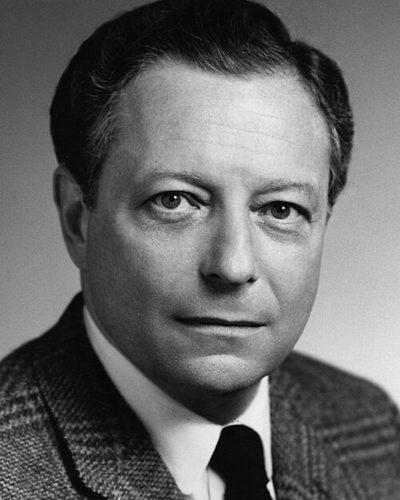

Ideologies / Conservative
What is Neoconservatism?
Neoconservatism is a political ideology in the Conservative family. Begun by former liberals who turned against the unintended effects of social programmes and the counterculture. It accepts a limited welfare state and capitalism while stressing religion and bourgeois virtue as their moral support. Abroad it holds that a great democracy should use its power, including military power, to defend and spread its values.
A liberal who has been mugged by reality.
Defined from: Irving Kristol, Neoconservatism: The Autobiography of an Idea (1995)
See how close you are to Neoconservatism Dare a friend to answer as one


Where Neoconservatism stands on 13 axes
Each axis runs from 0 to 100. A score of 50 is the middle. On a classic compass it sits in the Libertarian Right quadrant.
| Axis | Position | Score | In words |
|---|---|---|---|
| EconomyMarket to Planned | 25 | Strongly Market | |
| OwnershipPrivate to Collective | 15 | Very strongly Private | |
| RightsLiberty to Security | 60 | Leans Security | |
| GovernmentDemocracy to Autocracy | 25 | Strongly Democracy | |
| StructureDecentralised to Centralised | 60 | Leans Centralised | |
| NationInternationalist to Nationalist | 60 | Leans Nationalist | |
| ImmigrationMulticulturalist to Assimilationist | 60 | Leans Assimilationist | |
| ValuesProgressive to Traditional | 65 | Leans Traditional | |
| TechnologyAccelerationist to Precautionary | 30 | Strongly Accelerationist | |
| EnvironmentIndustrialist to Environmentalist | 15 | Very strongly Industrialist | |
| ReligionSecular to Religious | 55 | Balanced | |
| MilitaryPacifist to Militarist | 95 | Very strongly Militarist | |
| TradeFree Trade to Protectionist | 25 | Strongly Free Trade |
Ideologies closest to Neoconservatism
- Machiavellian Republicanism79% alike
- Hegelian Constitutional Monarchism78% alike
- Revisionist Zionism78% alike
- One Nation Conservatism77% alike
- Fusionism77% alike
Its opposite on this map is Anarcho Primitivism, at 31%.
Parties near Neoconservatism
- Conservative Party of 1979United Kingdom. The Conservative Manifesto 1979 (1979)90% alike
- Liberal Party of AustraliaAustralia. Let's Get Australia Back on Track (2025)89% alike
- Scottish ConservativesUnited Kingdom. Get Scotland Working (2026)88% alike
- Democratic CentreColombia. Colombia Más Grande 2026 (2026)88% alike
Common questions
What is Neoconservatism?
Neoconservatism is a political ideology in the Conservative family. Begun by former liberals who turned against the unintended effects of social programmes and the counterculture. It accepts a limited welfare state and capitalism while stressing religion and bourgeois virtue as their moral support. Abroad it holds that a great democracy should use its power, including military power, to defend and spread its values.
What does Neoconservatism believe?
In one line: A liberal who has been mugged by reality. Its strongest positions are Militarist, Private, Industrialist. Begun by former liberals who turned against the unintended effects of social programmes and the counterculture. It accepts a limited welfare state and capitalism while stressing religion and bourgeois virtue as their moral support. Abroad it holds that a great democracy should use its power, including military power, to defend and spread its values.
Who founded Neoconservatism?
Neoconservatism is defined here from Neoconservatism: The Autobiography of an Idea (1995) by Irving Kristol. The thinker most tied to it is Irving Kristol (1920 to 2009).
Is Neoconservatism left wing or right wing?
On a classic two axis compass Neoconservatism falls in the Libertarian Right quadrant, which means the economic right and the middle between libertarian and authoritarian. Left and right hide a lot, though, which is why EthosScales scores it on thirteen separate axes.
How is Neoconservatism different from Machiavellian Republicanism?
They are close: 79% alike. The biggest gaps are on Trade, where Neoconservatism scores 25 and Machiavellian Republicanism scores 60, and Nation, where Neoconservatism scores 60 and Machiavellian Republicanism scores 85. On each axis, 0 is one end and 100 is the other.
Think this is wrong? Suggest a correction. The scores are editorial estimates.